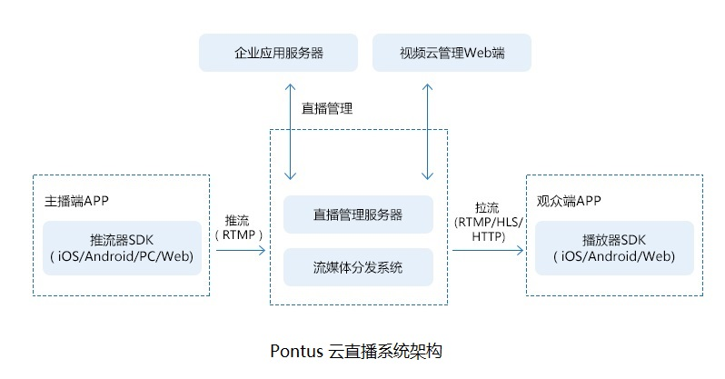
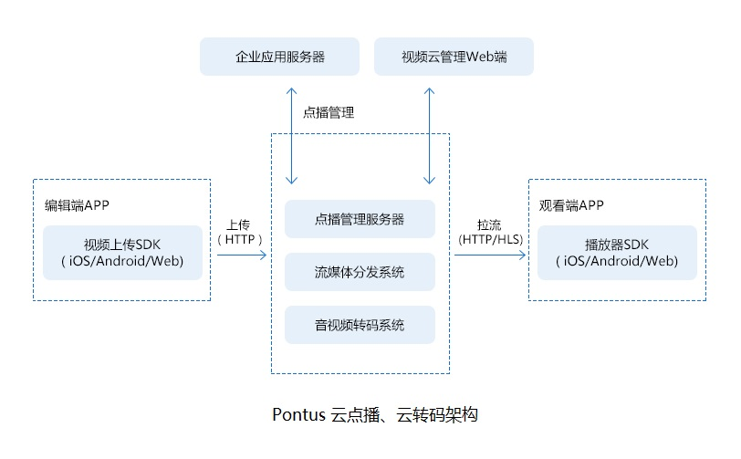

直播点播云平台核心功能
1 多码流、多屏支持
多码流、多分辨率输出，满足复杂网络条件下高清流畅直播需求；
2 高并发、低延时
支持万级（路数）视频处理扩展能力，每一路视频处理设备延迟在40ms-100ms以下；
3 流媒体处理能力
提供流媒体直播同步录制、截取缩略图、实时水印和转码等强大的流媒体处理能力；
4 多平台接入
从直播推流、服务端到播放器提供全套SDK，迅速接入直播、点播服务，支持PC/Andriod/iOS/Web等平台。
5 云管理
支持多地、异地不同机房的远程任务调度和管理；
支持任务优先级设定，按优先级调度任务；
支持任务在任意结点按计划时间启动与停止；
支持任务类别区分（离线任务、在线任务分配至偏好的转码器）；
快速任务响应，对上百路批量在线转码任务，正常网络条件下，系统调度并建立任务时间在30s内；
提供统一的API消息接口，便于与用户现有系统整合；

